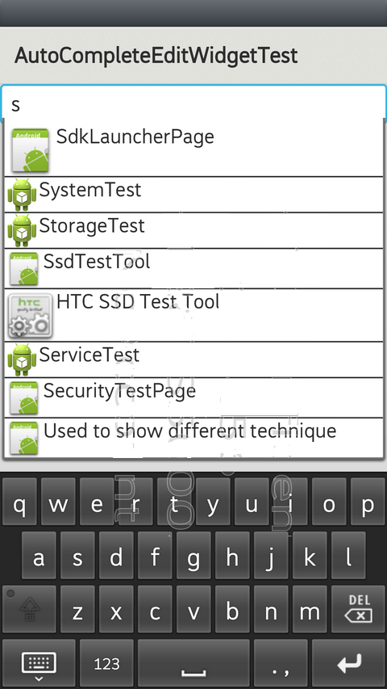

A [AutoCompleteEditWidget](#AutoCompleteEditWidget) An editable TextView that shows completion
suggestions automatically while the user is typing. The list of suggestions is displayed in a drop down menu from which the user can choose an item to replace the content of the edit box with.

In this section, you can know how to use the AutoCompleteEditWidget.
class MyWidgetBinder : public WidgetBinder {
public:
MyWidgetBinder(AutoCompleteEditWidgetTest parent)
: mParent(parent) {
}
// bind the widget data to present.
bool setWidgetValue(Widget widget, int32_t id, const String& data) {
bool handled = false;
if (id == SDKWidgetTest::R::id::icon) {
int index = atoi(data.string());
ImageWidget castImageWidget = dynamic_cast(widget);
if (castImageWidget != NULL) {
castImageWidget->setImageDrawer(mParent->getDrawers(index));
handled = true;
}
} else if (id == SDKWidgetTest::R::id::name) {
TextWidget castTextWidget = dynamic_cast(widget);
if (castTextWidget != NULL) {
castTextWidget->setText(data);
handled = true;
}
}
return handled;
}
private:
AutoCompleteEditWidgetTest* mParent;
}; // class MyWidgetBinder
// While use press select item, this will convert what user press to string.
class MyStringConvert : public StringConvert {
public:
String convertToString(const StringHashMap& selectedItem) {
return selectedItem.valueFor(String("name"));
}
}; // class MyStringConvert
// Filter the Text then show filter result to user
class MyFilter : public Filter {
public:
// From this developer can know user input string "prefix", user
// wnat to get thre prefix string with "prefix" then unfilteredData
// is total data that you need to filter then filter data will put in result then return it
StringHashMapVector performFiltering(
const String& prefix,
const StringHashMapVector& unfilteredData) {
if (prefix.length() == 0) {
return unfilteredData;
}
StringHashMapVector result;
String prefixString = prefix.toLowerCase();
for (size_t i = 0; i < unfilteredData.size(); i++) {
StringHashMap dataset = unfilteredData[i];
String dataStr = dataset.valueFor(String("name"));
StringArray words = dataStr.split(String(" "));
for (size_t j = 0; j < words.size(); j++) {
String word = words[j].toLowerCase();
if (word.indexOf(prefixString) == 0) {
result.push(dataset);
break;
}
}
}
return result;
}
}; // class MyFilter
Drawer AutoCompleteEditWidgetTest::getDrawers(int index) {
return (mpPackageIconLists)[index];
}
void AutoCompleteEditWidgetTest::onInit(
mpPackageManager = new PackageManager(*this);
Demand demand(Demand::ACTION_MAIN());
demand.addCategory(Demand::CATEGORY_LAUNCHER());
// get all AP from packageManager, we get the package name and AP icon
Vector<ResolveInfo> matches = mpPackageManager->queryDemandPages(demand, 0);
size_t matches_size = matches.size();
if (matches_size > 0) {
mpPackageNameLists = new Array<String>(matches_size);
mpPackageIconLists = new Array<Drawer*>(matches_size);
for (int i = 0; i < matches_size; i++) {
(*mpPackageNameLists)[i] = matches[i].loadLabel(*mpPackageManager);
(*mpPackageIconLists)[i] = matches[i].loadIconN(*mpPackageManager);
}
}
mpContext = new Context(this);
StringHashMapVector data;
// put AP icon and name to the data
for (int i = 0; i < mpPackageNameLists->size(); i++) {
StringHashMap dataset;
dataset.add(String("icon"), String::valueOf(i));
dataset.add(String("name"), (*mpPackageNameLists)[i]);
data.push(dataset);
}
Array<String> from(2);
from[0] = String("icon");
from[1] = String("name");
Array<int> to(2);
to[0] = SDKWidgetTest::R::id::icon;
to[1] = SDKWidgetTest::R::id::name;
// new the filter data provider, put the filter data to provider and data
// set the data formate
mpProvider = new ISimpleListItemProvider(mpContext, data,
SDKWidgetTest::R::layout::autocomplete_layout,
from, to);
// new the WidgetBinder to let developer set widget to show to user
mpWidgetBinder = new MyWidgetBinder(this);
mpProvider->setWidgetBinder(mpWidgetBinder);
mpStringConvert = new MyStringConvert();
mpProvider->setStringConvert(mpStringConvert);
// filter the text that user input.
mpFilter = new MyFilter();
mpProvider->setFilter(mpFilter);
mpLinearController = new LinearController(this);
mpLinearController->setOrientation(LinearController::VERTICAL);
mpAutoComplete = new AutoCompleteEditWidget(this);
mpAutoComplete->setThreshold(1);
// set provider to autocompleteEditWidget.
mpAutoComplete->setProvider(mpProvider);
mpLinearController->addWidget(mpAutoComplete);
Scene* scene = Scene::SceneFactory(this);
scene->attachController(mpLinearController);
scene->setupSceneLayout();
}
// Returns the number of characters the user must type before the drop down list is shown.
int32_t getThreshold() const;
// Specifies the minimum number of characters the user has to type in the
// edit box before the drop down list is shown.
void setThreshold(int32_t threshold);
// Changes the list of data used for auto completion.
void setProvider(ISimpleListItemProvider* pProvider);